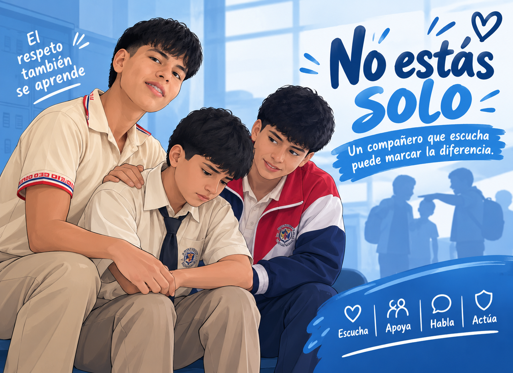
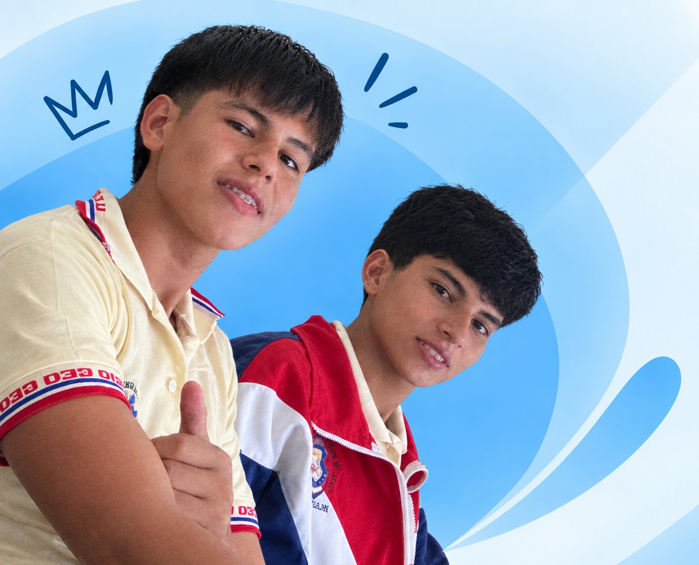

Juntos contra
el bullying
Prevenir el acoso escolar comienza con respeto, empatía y valentía.
Una Institucion segura comienza cuando todos decidimos respetarnos.

¿Qué es el bullying o acoso escolar?
El bullying consiste en comportamientos de agresión, intimidación, exclusión o humillación que se repiten en el tiempo y afectan a otra persona. No es un conflicto puntual: implica una diferencia de poder entre quien agrede y quien lo sufre, y por eso requiere atención de toda la comunidad educativa.
Acoso físico
Agresiones o acciones que buscan lastimar físicamente a otra persona, como empujones, golpes o daño a sus pertenencias.
Acoso verbal
Insultos, burlas, apodos, amenazas o comentarios repetidos que buscan hacer sentir mal a otra persona.
Acoso social
Excluir, aislar, difundir rumores o intentar alejar deliberadamente a alguien del grupo.
Ciberacoso
Acoso realizado a través de redes sociales, chats, videojuegos u otros medios digitales, incluso fuera del horario escolar.
¿Cómo reconocer una situación de bullying?
Cambios repentinos de comportamiento o de ánimo.
Aislamiento de los compañeros y compañeras.
Miedo o rechazo a asistir a clases.
Tristeza o preocupación frecuente.
Pérdida de interés en actividades que antes disfrutaba.
Problemas para relacionarse con otras personas.
Prestar atención también es una forma de ayudar.
Notar estos cambios a tiempo permite acompañar mejor a quien lo necesita, ya sea en casa o en el aula.¿Cómo prevenir el bullying?
La prevención empieza en las acciones cotidianas. Estos cinco pasos son la base de una convivencia escolar más segura.
Respetar
Tratar a los demás con dignidad, sin importar sus diferencias.
Escuchar
Prestar atención cuando alguien necesita hablar.
Incluir
Evitar que alguien se sienta solo o excluido del grupo.
Hablar
Contar a un adulto de confianza cuando ocurre una situación de acoso.
Actuar
No quedarse indiferente ante una situación injusta y buscar ayuda.
No seas espectador, sé parte de la solución.
No es necesario enfrentarse directamente a quien está acosando. Lo importante es acompañar a la persona afectada de manera segura y buscar el apoyo de un adulto responsable.
Observa
Presta atención a lo que ocurre a tu alrededor, sin ignorar las señales.
No apoyes el acoso
Reírte, compartir o quedarte callado también sostiene la situación. Elige no ser parte de eso.
Acompaña
Acércate a la persona afectada, hazle saber que no está sola.
Informa
Cuenta lo que viste a un docente, orientador o adulto de confianza.
Busca ayuda
Acude a las personas responsables de la institución para que intervengan.
Buscar apoyo de un adulto responsable no es "acusar": es cuidar a un compañero o compañera.
Si te está pasando, no estás solo.
Lo que ocurre no es tu culpa. Hablar con una persona adulta de confianza puede ayudarte a encontrar una solución.
Una palabra puede herir, pero también puede ayudar.
La magnitud del acoso escolar, en cifras
Estos datos provienen de fuentes oficiales. Conocerlos ayuda a entender que el bullying no es un caso aislado, sino un problema que toda la comunidad educativa puede prevenir.
de los adolescentes en el mundo ha sido víctima de acoso escolar al menos una vez en el último mes.
Fuente: UNESCO, Instituto de Estadística (2018)estudiantes de entre 11 y 18 años en Ecuador ha sido víctima de acoso escolar.
Fuente: Ministerio de Educación del Ecuador y UNICEFde los países estudiados por la UNESCO han logrado reducir sus tasas de acoso escolar en la última década.
Fuente: UNESCO, "Behind the numbers" (2019)Acoso escolar: comparativa mundial y Ecuador
Según la UNESCO, la apariencia física es la razón de acoso más mencionada por los estudiantes, seguida de la raza, la nacionalidad o el color de piel. Consulta el informe completo en unesco.org y el estudio nacional en unicef.org/ecuador.
¿Qué harías tú?
Tres situaciones escolares para pensar juntos formas seguras y respetuosas de actuar.
Has completado la actividad
Gracias por pensar en cómo cuidar a tus compañeros y compañeras. Pequeñas decisiones como estas construyen una escuela más segura.
Frases contra el bullying
"Ser diferente no es un problema, es parte de lo que nos hace únicos."
"Tu voz puede ser el apoyo que alguien necesita."
"En nuestra escuela, todos merecemos respeto."
"Incluir a alguien no cuesta nada y puede cambiarlo todo."
"La amistad se construye escuchando, no juzgando."
"Un gesto de empatía puede ser el mejor recuerdo del día de alguien."
Asume tu compromiso
"Me comprometo a respetar a mis compañeros, rechazar el acoso, incluir a los demás y pedir ayuda cuando sea necesario."
¡Gracias por ser parte del cambio!
Tu compromiso ayuda a construir una escuela donde todos se sientan respetados e incluidos.
Detrás de esta página hay una idea: generar conciencia y promover una convivencia basada en el respeto.

Una idea creada por dos estudiantes con ganas de aportar
¿Quiénes somos?
Somos los creadores de esta página web. Decidimos unir nuestras ideas, habilidades y ganas de hacer un cambio positivo para crear un espacio educativo sobre la prevención del bullying.
¿Para qué fue creada?
Esta página fue creada con el propósito de prevenir el bullying o acoso escolar, brindar información, generar conciencia y ayudar a construir una mejor convivencia dentro de la comunidad educativa.
¿Qué queremos lograr?
Queremos que cada estudiante conozca la importancia del respeto, la empatía y la inclusión, y que sepa que pedir ayuda ante una situación de acoso es una decisión valiente.
Concientizar
Informar sobre qué es el bullying y cómo reconocerlo.
Promover el respeto
Fomentar la empatía, la inclusión y el compañerismo.
Prevenir
Brindar orientación para actuar de manera segura ante situaciones de acoso escolar.
Pequeñas ideas pueden generar grandes cambios.
Juntos podemos construir una escuela donde todos sean respetados, incluidos y escuchados.
Recursos educativos
Enlaces a fuentes confiables sobre prevención del bullying, convivencia escolar y educación emocional.
Juntos podemos hacer la diferencia
El cambio comienza con pequeñas acciones: respetar, escuchar, incluir y ayudar.
Ser parte del cambio